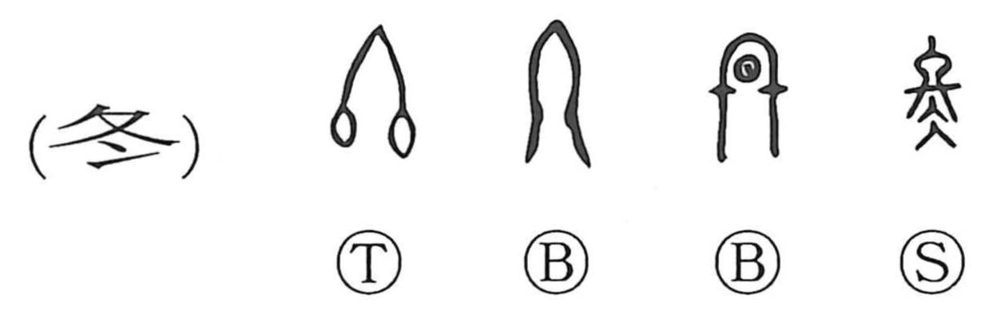

冬

Kun: fuyu | On: tou
winter
Explanation
In the oracle-bone and bronze forms, this character drew the tied ends of a thread, a compact image of completion. Later an ice element was added to that figure, yielding the present form 冬. By phonetic loan it came to serve as the name of the season, winter. To state the sense of “ending” more explicitly, the silk/thread classifier was attached to this original image to form 終. Thus the modern ‘winter’ graph preserves the ancient picture that underlies 終.